Overview
This vignette walks through two empirical examples based on published studies whose raw data are not publicly available:
- an ANOVA design with reported cell means and F-statistics (Reynolds & Besner, 2008);
- a multiple linear regression with reported descriptives, correlations, and regression coefficients (Bardwell et al., 2007).
Across the two examples, every exported function in
stats2data is demonstrated:
- the optimization functions
optim_aov(),optim_vec(),optim_mlr(), andparallel_optim(); - the S3 inspection methods
print(),summary(),get_stats(),get_rmse(), andcoef(); - the diagnostic and comparison plots
plot_error(),plot_cooling(),plot_summary(), andplot()(for parallel results); - the GRIM helper
check_grim(); - the Shiny entry point
run_app().
Tuning hyperparameters are left at their package defaults wherever feasible.
Installation
if (!requireNamespace("devtools", quietly = TRUE)) install.packages("devtools")
devtools::install_github("sebastian-lortz/stats2data")1. ANOVA module — Reynolds & Besner (2008)
In their effort to assess the reproducibility of psychological
science, the Open Science Collaboration (2015) attempted a large-scale
replication of research findings. Among the replicated studies are
Reynolds and Besner (2008), who reported a 2 × 2 within-subjects design
(S = 16) measuring response times to exception words and
nonwords under predictable switch and stay sequences. The original raw
data are not publicly available (Open Science Collaboration, 2015). The
reported cell means and F-statistics provide the targets required by
optim_aov(). This section simulates a plausible raw dataset
consistent with those targets, using the optimization methods
implemented in stats2data.
1.1 Encoding the targets
The reported summary statistics are encoded as the inputs of
optim_aov(). The factor types, the design formula, and the
data type (continuous mean response times) follow directly from the
method description of the experiment.
S <- 16
levels <- c(2, 2)
factor_type <- c("within", "within")
formula <- "outcome ~ Factor1 * Factor2 + Error(ID / (Factor1 * Factor2))"
integer <- FALSEIn the results, Factor1 is reported with
F(1, 15) = 30.5. Factor2 and the
Factor1:Factor2 interaction are reported as
F < 1; small ordered placeholders are supplied for both.
The cell means are taken directly from the manuscript:
target_f_list <- list(
effect = c("Factor1", "Factor2", "Factor1:Factor2"),
F_value = c(30.5, 0.4, 0.5)
)
target_group_means <- c(543, 536, 614, 618)A plausible (and deliberately wide) admissible range is derived from
the reported pooled MSE = 3070:
1.2 Running the optimiser
optim_aov() is called with default hyperparameters
(max_iter = 1e4, thresh = 5e-3,
init_temp = 1e-3, cooling_rate = NULL (set
automatically), max_starts = 3).
result.aov <- optim_aov(
S = S,
levels = levels,
target_group_means = target_group_means,
target_f_list = target_f_list,
factor_type = factor_type,
range = range,
formula = formula,
integer = integer,
max_iter = 100 # remove later
)1.3 Inspecting the result
The default print() method shows the design, the sample
size, the requested effects, and the best objective value. The reported
best error is below thresh = 5e-3, indicating that the
optimiser has located a candidate within the user-specified
threshold.
result.aov
#> stats2data ANOVA result
#> Design: 2 x 2 (within, within)
#> Subjects: 16
#> Effects: Factor1, Factor2, Factor1:Factor2
#> Best error: 0.339412summary() prints the target-vs-simulated F-values, the
target-vs-simulated cell means, and the corresponding RMSEs.
summary(result.aov)
#> stats2data ANOVA Summary
#> -----------------------------------------------
#> Design: 2 x 2 (within, within)
#> Subjects: 16
#> Best error: 0.339412
#>
#> RMSE
#> F-statistics: 0.3394
#> Group means: 9.095e-13
#>
#> -----------------------------------------------
#> F-values (Target vs. Simulated):
#> effect target_F sim_F
#> Factor1 30.5 30.498653
#> Factor2 0.4 0.001407
#> Factor1:Factor2 0.5 0.067885
#>
#> -----------------------------------------------
#> Group Means (Target vs. Simulated):
#> cell target_mean sim_mean
#> F1=1, F2=1 543 543
#> F1=1, F2=2 536 536
#> F1=2, F2=1 614 614
#> F1=2, F2=2 618 618get_stats() returns the underlying numeric components:
the fitted afex ANOVA table, the F-vector, and the
simulated cell means.
stats.aov <- get_stats(result.aov)
stats.aov
#> $model
#> Anova Table (Type 3 tests)
#>
#> Response: outcome
#> num Df den Df MSE F ges Pr(>F)
#> Factor1 1 15 3070.2 30.4987 0.099557 5.853e-05 ***
#> Factor2 1 15 25591.5 0.0014 0.000043 0.9706
#> Factor1:Factor2 1 15 7129.7 0.0679 0.000571 0.7980
#> ---
#> Signif. codes: 0 '***' 0.001 '**' 0.01 '*' 0.05 '.' 0.1 ' ' 1
#>
#> $F_value
#> [1] 30.498652713 0.001406717 0.067884806
#>
#> $mean
#> 1_1 1_2 2_1 2_2
#> 543 536 614 618get_rmse() returns the F-statistic and group-mean RMSEs
as a list.
get_rmse(result.aov)
#> $rmse_F
#> [1] 0.3394122
#>
#> $rmse_mean
#> [1] 9.094947e-131.4 Diagnostics
plot_error() shows the simulated-annealing best-error
trajectory.
plot_error(result.aov)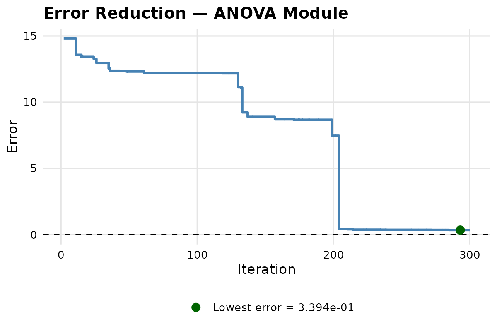
plot_cooling() reconstructs the temperature schedule
from the stored inputs.
plot_cooling(result.aov)
1.5 Target vs. simulated comparison
plot_summary() builds a lollipop chart of simulated
minus target values. With standardised = FALSE (used here
because one target F is below the standardization threshold), the y-axis
is on the original F-scale; with the default
standardised = TRUE, discrepancies would be divided by the
target value, with a fall-back to the unstandardised difference for
near-zero targets.
plot_summary(result.aov, standardised = FALSE)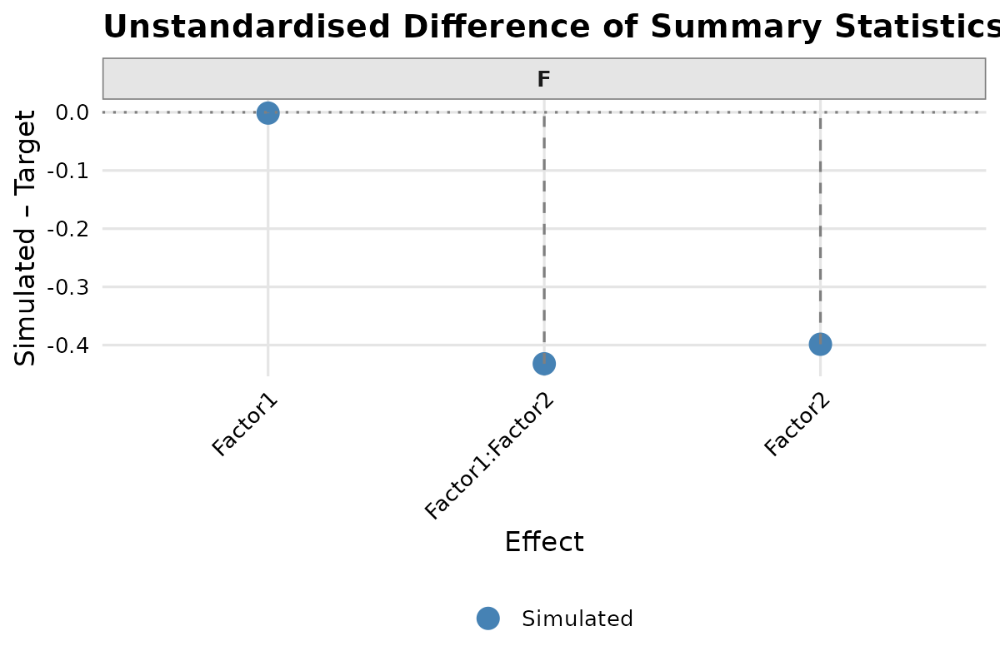
1.6 Inspect the simulated dataset
The simulated dataset is stored at result.aov$data with
columns ID, Factor1, Factor2,
outcome.
data.aov <- result.aov$data
head(data.aov)
#> ID Factor1 Factor2 outcome
#> 1 1 1 1 426.2445
#> 2 1 1 2 651.8148
#> 3 1 2 1 614.9745
#> 4 1 2 2 607.3280
#> 5 2 1 1 722.4472
#> 6 2 1 2 374.3796The four cells and the four factor marginals are visualised as
densities in a greyscale theme_apa() style.
make_panel <- function(idx, title) {
ggplot(data.frame(value = data.aov$outcome[idx]),
aes(x = value)) +
geom_density(fill = "grey25", colour = "white", linewidth = 0.2) +
labs(title = title, x = NULL, y = NULL) +
xlim(300, 900) +
jtools::theme_apa() +
theme(legend.position = "none")
}
panels <- list(
make_panel(data.aov$Factor1 == 1 & data.aov$Factor2 == 1, "Factor1=1, Factor2=1"),
make_panel(data.aov$Factor1 == 1 & data.aov$Factor2 == 2, "Factor1=1, Factor2=2"),
make_panel(data.aov$Factor1 == 2 & data.aov$Factor2 == 1, "Factor1=2, Factor2=1"),
make_panel(data.aov$Factor1 == 2 & data.aov$Factor2 == 2, "Factor1=2, Factor2=2"),
make_panel(data.aov$Factor1 == 1, "Factor1=1 marginal"),
make_panel(data.aov$Factor1 == 2, "Factor1=2 marginal"),
make_panel(data.aov$Factor2 == 1, "Factor2=1 marginal"),
make_panel(data.aov$Factor2 == 2, "Factor2=2 marginal")
)
gridExtra::grid.arrange(grobs = panels, ncol = 2)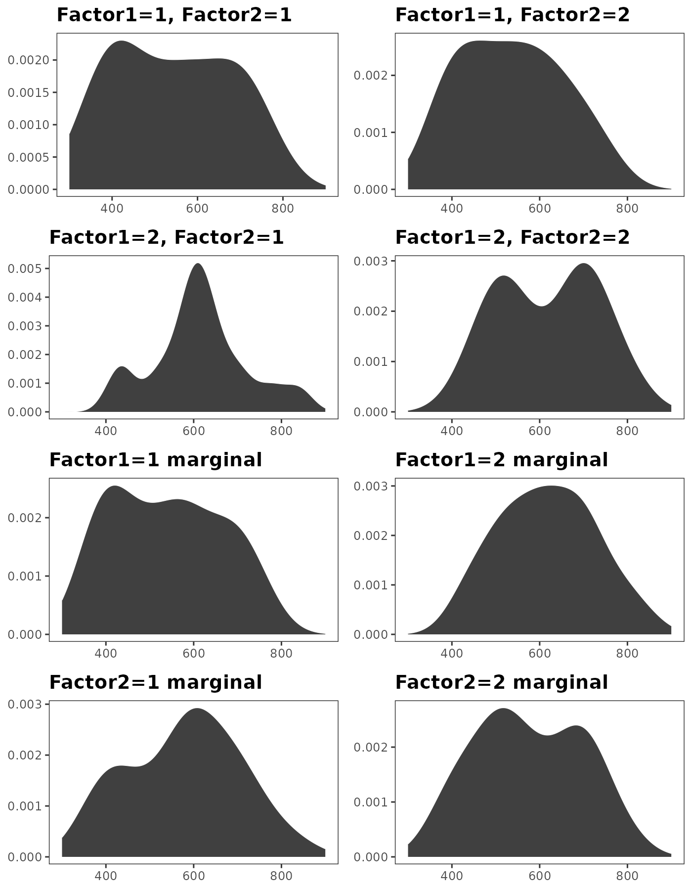
1.7 Repeated runs — parallel_optim()
parallel_optim() repeatedly calls any
optim_* function with the same arguments, returns the list
of results, and identifies the single best run by minimum objective
error. runs = 18 parallel replications are used here;
setting cores = 6 dispatches the runs to multiple R
sessions via future::multisession.
result.parallel_aov <- parallel_optim(
FUN = optim_aov,
args = list(
S = S,
levels = levels,
target_group_means = target_group_means,
target_f_list = target_f_list,
factor_type = factor_type,
range = range,
formula = formula,
integer = integer,
max_iter = 100 # remove later
),
runs = 6,
cores = 6, # change later
seed = 2026
)Inspect
result.parallel_aov
#> stats2data parallel result
#> Module: aov
#> Runs: 6
#> Best error (across runs): 0.360605
#> Mean error (across runs): 3.94888
summary(result.parallel_aov)
#> stats2data Parallel Summary
#> -----------------------------------------------
#> Module: aov | Runs: 6
#> Best error: 0.360605
#> Mean error: 3.94888
#> SD error: 3.23516
#>
#> Target RMSE (across runs):
#> metric mean sd min max
#> rmse_F 3.949 3.235 0.3606 9.237
#>
#> Between-run RMSE:
#> metric mean sd min max
#> rmse_F 2.389 2.106 0.3213 5.386
#>
#> Aggregated Statistics:
#> F_value:
#> mean median sd min max
#> 1 23.834757 23.242753 5.816849 1.451e+01 30.70873
#> 2 0.001846 0.002005 0.000713 8.136e-04 0.00257
#> 3 0.098669 0.075892 0.077893 2.284e-02 0.24730
#>
#> mean:
#> mean median sd min max
#> 1_1 543 543 9.859e-13 543 543
#> 1_2 536 536 8.007e-13 536 536
#> 2_1 614 614 9.963e-13 614 614
#> 2_2 618 618 9.552e-13 618 618get_stats() for a stats2data_parallel
object aggregates each numeric component returned by the per-run
get_stats() method into a data frame with columns
mean, median, sd,
min, max:
get_stats(result.parallel_aov)
#> $F_value
#> mean median sd min max
#> 1 23.834757167 23.242753177 5.8168488118 1.450774e+01 30.70872540
#> 2 0.001845932 0.002004755 0.0007130464 8.136056e-04 0.00256984
#> 3 0.098669150 0.075891549 0.0778927687 2.284071e-02 0.24729683
#>
#> $mean
#> mean median sd min max
#> 1_1 543 543 9.858688e-13 543 543
#> 1_2 536 536 8.006653e-13 536 536
#> 2_1 614 614 9.963015e-13 614 614
#> 2_2 618 618 9.552401e-13 618 618get_rmse() returns three components:
between_rmse (per-metric run-to-run RMSE against the
across-run grand mean), target_rmse (per-metric RMSE
against the original targets), and the raw per-run vectors:
get_rmse(result.parallel_aov)
#> $between_rmse
#> metric mean sd min max
#> 1 rmse_F 2.38867 2.105637 0.3213465 5.385638
#>
#> $target_rmse
#> metric mean sd min max
#> 1 rmse_F 3.94888 3.235156 0.3606053 9.237163
#>
#> $raw
#> $raw$between
#> $raw$between$rmse_F
#> [1] 0.3654966 3.1953306 3.9687327 1.0954759 5.3856384 0.3213465
#>
#>
#> $raw$target
#> $raw$target$rmse_F
#> [1] 4.2262798 0.7321844 0.3606053 4.9542151 9.2371627 4.1828356RMSE distribution
The plot() method for stats2data_parallel
displays the between-run RMSE distribution alongside the
deviation-from-target RMSE distribution, faceted by metric:
plot(result.parallel_aov)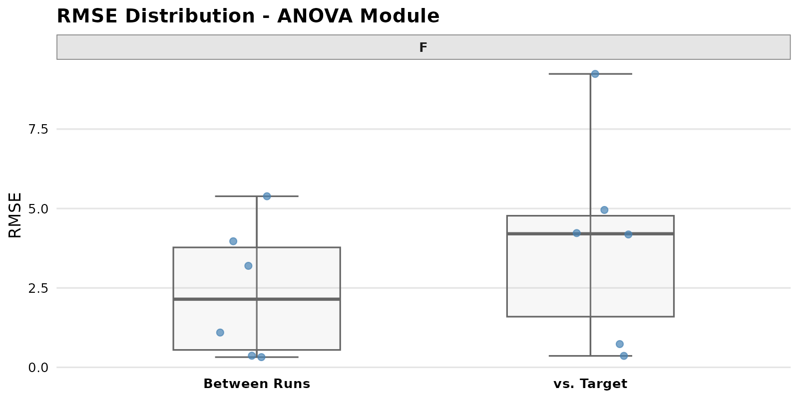
Aggregated target-vs-simulated comparison
plot_summary() for a parallel result draws the same
lollipop chart as for a stand-alone result; the simulated point per
parameter is the across-run mean and an error bar overlays the
across-run min/max (default).
plot_summary(result.parallel_aov, standardised = FALSE)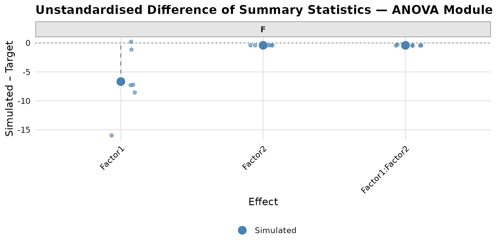
The single best run is accessible via $best and supports
the same S3 methods as a stand-alone result:
result.parallel_aov$best
#> stats2data ANOVA result
#> Design: 2 x 2 (within, within)
#> Subjects: 16
#> Effects: Factor1, Factor2, Factor1:Factor2
#> Best error: 0.360605
get_rmse(result.parallel_aov$best)
#> $rmse_F
#> [1] 0.3606053
#>
#> $rmse_mean
#> [1] 9.392074e-132. Descriptives + MLR module — Bardwell et al. (2007)
Bardwell et al. (2007, https://doi.org/10.1016/j.jad.2006.06.013)
examined whether mood symptoms or apnea severity better predict daytime
fatigue in patients with obstructive sleep apnea. The original raw data
of Bardwell et al. (2003) are not publicly available. The simulation
proceeds in three steps: marginal distributions via
optim_vec(), joint regression structure via
optim_mlr(), and a replication assessment via
parallel_optim().
2.1 Step 1 — marginals via optim_vec()
Sanity check with check_grim()
The GRIM test (Brown & Heathers, 2017) verifies whether a reported mean is achievable for the stated sample size and decimal precision. Each integer-valued mean is checked at one decimal place:
check_grim(n = N, target_mean = target_mean["Depression"], decimals = 1)
#> $test
#> [1] TRUE
#>
#> $grim_mean
#> Depression
#> 12.6
check_grim(n = N, target_mean = target_mean["Fatigue"], decimals = 1)
#> $test
#> [1] TRUE
#>
#> $grim_mean
#> Fatigue
#> 10.8Run the optimiser
sprite_prec = c(1, 1) matches the reported one-decimal
rounding precision of the target means and SDs; all other arguments are
at the package defaults (thresh = .005,
max_iter = 5e5,
init_temp = cooling_rate = NULL (set automatically),
max_starts = 3).
Inspect
result.vec
#> stats2data Descriptives result
#> Variables: 4
#> N: 60
#> Best error per variable:
#> Apnea.1: 0.04283
#> Apnea.2: 0.04102
#> Depression: 0.02748
#> Fatigue: 0.03714
summary(result.vec)
#> stats2data Descriptives Summary
#> -----------------------------------------------
#> N: 60 | Variables: 4
#>
#> Best error per variable:
#> Apnea.1: 0.04283
#> Apnea.2: 0.04102
#> Depression: 0.02748
#> Fatigue: 0.03714
#>
#> RMSE
#> Means: 0.0361
#> SDs: 0.03759
#>
#> Target vs. Simulated:
#> variable target_mean sim_mean target_sd sim_sd
#> Apnea.1 48.8 48.85 27.1 27.057
#> Apnea.2 17.3 17.35 20.1 20.059
#> Depression 12.6 12.60 11.3 11.327
#> Fatigue 10.8 10.78 7.3 7.337Diagnostics
plot_error() for a stats2data_vec object
accepts run to select a per-variable trajectory; the
trajectory for Apnea.2 (the second variable) is shown:
plot_error(result.vec, run = 2)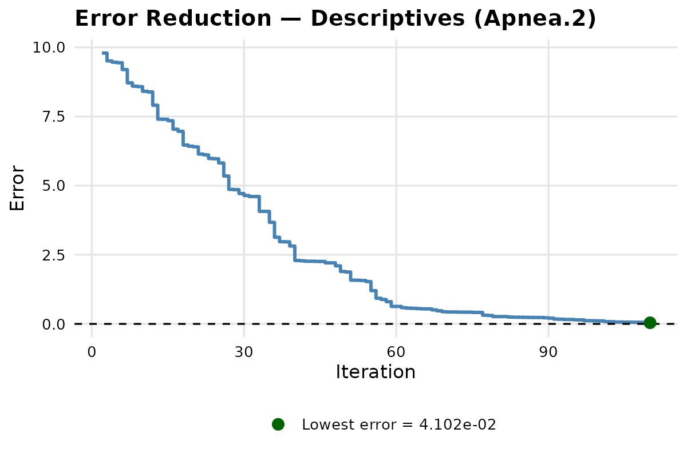
plot_cooling(result.vec)
Inspect the simulated dataset
The four marginals are shown together. Apnea.1 and
Apnea.2 are continuous; Depression and
Fatigue are integer-valued
(integer = c(FALSE, FALSE, TRUE, TRUE)), so the latter two
are shown as binwidth = 1 histograms scaled to density to
remain visually comparable to the densities of the continuous
variables.
data.vec <- result.vec$data
head(data.vec)
#> Apnea.1 Apnea.2 Depression Fatigue
#> 1 45.43085 77.497362040 6 13
#> 2 27.96974 0.094717968 5 7
#> 3 80.65296 70.847112915 20 3
#> 4 16.84571 2.760439889 5 21
#> 5 57.82309 0.004102534 29 10
#> 6 110.99222 51.328891744 25 5
cont_vars <- c("Apnea.1", "Apnea.2")
int_vars <- c("Depression", "Fatigue")
ggdata.vec <- tidyr::pivot_longer(
data.vec,
cols = c(Apnea.1, Apnea.2, Depression, Fatigue),
names_to = "variable",
values_to = "value"
)
ggdata.vec$variable <- factor(
ggdata.vec$variable,
levels = c(cont_vars, int_vars)
)
ggdata.vec$kind <- ifelse(ggdata.vec$variable %in% int_vars,
"integer", "continuous")
ggplot(ggdata.vec, aes(x = value)) +
geom_density(
data = subset(ggdata.vec, kind == "continuous"),
fill = "gray60", color = "gray20", alpha = 0.5
) +
geom_histogram(
data = subset(ggdata.vec, kind == "integer"),
aes(y = after_stat(density)),
binwidth = 1,
fill = "gray60", color = "gray20"
) +
facet_wrap(~ variable, scales = "free", nrow = 2) +
labs(x = NULL, y = "Density") +
theme_minimal(base_size = 13)
2.2 Step 2 — regression structure via optim_mlr()
Targets
The reported regression coefficients (intercept first), their
standard errors, and the upper-triangular correlation matrix
(column-wise, excluding the diagonal) are encoded as numeric vectors.
NA entries flag unreported values that are excluded from
the objective.
Run the optimiser
A first call uses package defaults except for a stricter
thresh = .0005 and a starting weight = .5 for
the regression-vs.-correlation balance.
result.mlr <- optim_mlr(
N = N,
target_mean = target_mean,
target_sd = target_sd,
range = range_matrix,
integer = integer,
reg_equation = reg_equation,
target_cor = target_cor,
target_reg = target_reg,
target_se = target_se,
thresh = .0005,
weight = .5
)
#>
#> Hill climbing best error: 0.002397144Inspect
result.mlr
#> stats2data MLR result
#> N: 60
#> Equation: Fatigue ~ Apnea.1 + Apnea.2 + Depression
#> Best error: 0.00239714
summary(result.mlr)
#> stats2data MLR Summary
#> -----------------------------------------------
#> N: 60 | Model: Fatigue ~ Apnea.1 + Apnea.2 + Depression
#> Best error: 0.00239714
#>
#> RMSE
#> Correlations: 6.742e-05
#> Regression Coefficients: 0.001739
#> Standard Errors: 0.006936
#>
#> Descriptives (Target vs. Simulated):
#> variable target_mean sim_mean target_sd sim_sd
#> Apnea.1 48.8 48.8 27.1 27.100
#> Apnea.2 17.3 17.3 20.1 20.100
#> Depression 12.6 12.6 11.3 11.302
#> Fatigue 10.8 10.8 7.3 7.297
#>
#> Coefficients (Target vs. Simulated):
#> term target_reg sim_reg target_se sim_se
#> (Intercept) 4.020 4.019991 NA 1.64575
#> Apnea.1 0.023 0.024067 0.034 0.02748
#> Apnea.2 0.008 0.007384 0.048 0.03803
#> Depression 0.438 0.434748 0.066 0.06447
#>
#> Correlations (Target vs. Simulated):
#> pair target_cor sim_cor
#> Apnea.1-Apnea.2 NA 0.30288
#> Apnea.1-Depression NA 0.02148
#> Apnea.1-Fatigue NA 0.22661
#> Apnea.2-Depression 0.11 0.11000
#> Apnea.2-Fatigue 0.20 0.20000
#> Depression-Fatigue 0.68 0.67988get_stats() returns the fitted lm, its
coefficients and standard errors, the upper-triangular correlation
vector, and the column-wise means and SDs:
stats.mlr <- get_stats(result.mlr)
stats.mlr$reg
#> (Intercept) Apnea.1 Apnea.2 Depression
#> 4.019990932 0.024066672 0.007384476 0.434747588
stats.mlr$se
#> (Intercept) Apnea.1 Apnea.2 Depression
#> 1.64574804 0.02747814 0.03802864 0.06446858
stats.mlr$cor
#> [1] 0.30287813 0.02147571 0.22661398 0.10999909 0.20000236 0.67988325coef() is a convenience wrapper that re-fits the
regression and returns the coefficient vector:
coef(result.mlr)
#> (Intercept) Apnea.1 Apnea.2 Depression
#> 4.019990932 0.024066672 0.007384476 0.434747588
get_rmse(result.mlr)
#> $rmse_cor
#> [1] 6.742064e-05
#>
#> $rmse_reg
#> [1] 0.001738888
#>
#> $rmse_se
#> [1] 0.006935607Diagnostics
plot_error() shows the total-objective trajectory:
plot_error(result.mlr, first_iter = 1000)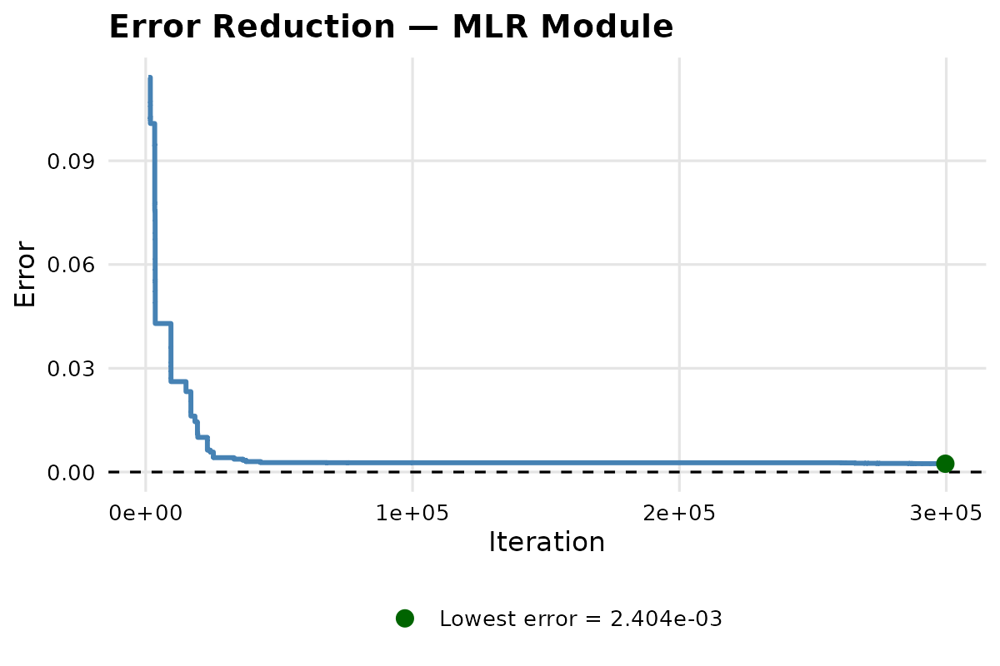
For stats2data_mlr objects, plot_error()
exposes a ratio = TRUE switch that plots the per-iteration
correlation-to-regression error ratio together with mean, median, and
final reference lines:
plot_error(result.mlr, ratio = TRUE)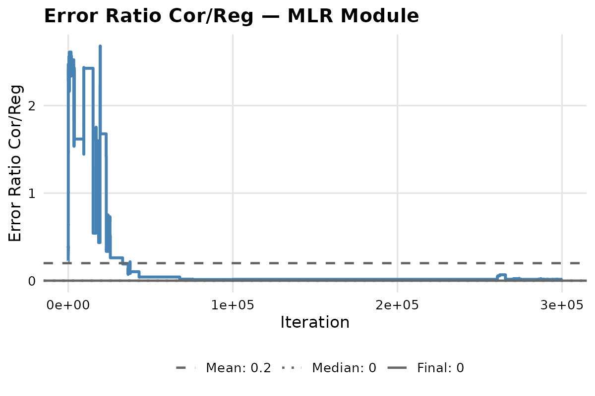
The trajectory shows that the regression component dominates the
objective. To rebalance the two error components, the optimization is
repeated with a smaller weight = .9:
result.mlr <- optim_mlr(
N = N,
target_mean = target_mean,
target_sd = target_sd,
range = range_matrix,
integer = integer,
reg_equation = reg_equation,
target_cor = target_cor,
target_reg = target_reg,
target_se = target_se,
thresh = .0005,
weight = .9
)
#>
#> Hill climbing best error: 0.0005361657
plot_error(result.mlr, ratio = TRUE)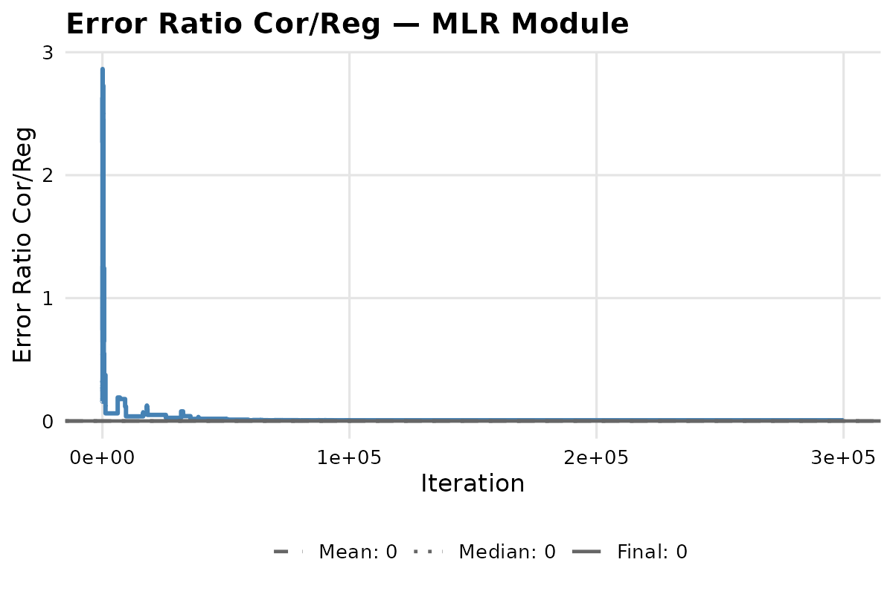
The error ratio is now closer to one and the best objective value is lower than in the first call.
Inspect the simulated dataset
data.mlr <- result.mlr$data
head(data.mlr)
#> Apnea.1 Apnea.2 Depression Fatigue
#> 1 31.15287 0.05950186 17 19
#> 2 39.38530 0.28732845 33 14
#> 3 78.48202 24.30862154 23 20
#> 4 35.12022 27.00917381 15 5
#> 5 103.79105 20.96804540 28 12
#> 6 45.43404 2.19282393 9 21plot_partial_regression() returns one partial-regression
ggplot per predictor, each annotated with the partial slope and the
residual SD:
partial.plots <- plot_partial_regression(lm(reg_equation, data = data.mlr))
gridExtra::grid.arrange(grobs = partial.plots, ncol = 2)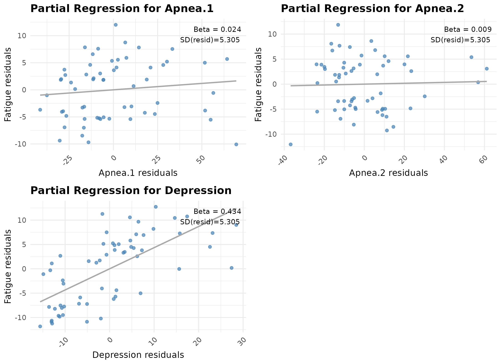
2.3 Step 3 — repeated runs via parallel_optim()
parallel_optim() repeatedly calls any
optim_* function with the same arguments, returns the list
of results, and identifies the single best run by minimum objective
error. runs = 18 parallel replications are used; setting
cores = 6 dispatches the runs to multiple R sessions via
future::multisession.
result.parallel <- parallel_optim(
FUN = optim_mlr,
args = list(
N = N,
target_mean = target_mean,
target_sd = target_sd,
range = range_matrix,
integer = integer,
reg_equation = reg_equation,
target_cor = target_cor,
target_reg = target_reg,
target_se = target_se,
thresh = .0005,
weight = .9
),
runs = 6, # change later
cores = 6,
seed = 2026
)Inspect
result.parallel
#> stats2data parallel result
#> Module: mlr
#> Runs: 6
#> Best error (across runs): 0.00050209
#> Mean error (across runs): 0.000536122
summary(result.parallel)
#> stats2data Parallel Summary
#> -----------------------------------------------
#> Module: mlr | Runs: 6
#> Best error: 0.00050209
#> Mean error: 0.000536122
#> SD error: 2.85285e-05
#>
#> Target RMSE (across runs):
#> metric mean sd min max
#> rmse_cor 2.028e-05 1.533e-05 4.311e-06 3.906e-05
#> rmse_reg 2.117e-03 3.748e-04 1.665e-03 2.578e-03
#> rmse_se 7.514e-03 3.256e-04 7.189e-03 7.992e-03
#>
#> Between-run RMSE:
#> metric mean sd min max
#> rmse_cor 1.566e-05 7.450e-06 6.615e-06 2.495e-05
#> rmse_reg 8.606e-04 4.203e-04 1.278e-04 1.315e-03
#> rmse_se 4.587e-04 1.351e-04 2.495e-04 6.047e-04
#>
#> Aggregated Statistics:
#> reg:
#> mean median sd min max
#> (Intercept) 4.020097 4.020194 0.0005180 4.019194 4.020581
#> Apnea.1 0.024243 0.024171 0.0005333 0.023651 0.024900
#> Apnea.2 0.007082 0.007609 0.0017443 0.004736 0.008796
#> Depression 0.434473 0.434578 0.0008163 0.433010 0.435484
#>
#> se:
#> mean median sd min max
#> (Intercept) 1.70225 1.69947 0.0510956 1.64763 1.77126
#> Apnea.1 0.02667 0.02665 0.0004020 0.02621 0.02721
#> Apnea.2 0.03729 0.03732 0.0004598 0.03660 0.03785
#> Depression 0.06526 0.06535 0.0006627 0.06449 0.06614
#>
#> cor:
#> mean median sd min max
#> 1 0.03020 -0.006912 1.942e-01 -0.18818 0.27143
#> 2 0.02826 0.027771 4.504e-03 0.02328 0.03596
#> 3 0.26478 0.270856 3.035e-02 0.22768 0.30155
#> 4 0.11000 0.110000 1.567e-06 0.11000 0.11000
#> 5 0.20000 0.200000 3.970e-06 0.19999 0.20000
#> 6 0.68003 0.680030 3.212e-05 0.67999 0.68007
#>
#> mean:
#> mean median sd min max
#> Apnea.1 48.8 48.8 0.0005433 48.8 48.8
#> Apnea.2 17.3 17.3 0.0005423 17.3 17.3
#> Depression 12.6 12.6 0.0000000 12.6 12.6
#> Fatigue 10.8 10.8 0.0000000 10.8 10.8
#>
#> sd:
#> mean median sd min max
#> Apnea.1 27.100 27.100 4.935e-05 27.100 27.100
#> Apnea.2 20.100 20.100 2.560e-05 20.100 20.100
#> Depression 11.299 11.299 3.062e-03 11.296 11.304
#> Fatigue 7.301 7.302 2.398e-03 7.297 7.304
get_stats(result.parallel)
#> $reg
#> mean median sd min max
#> (Intercept) 4.020096650 4.020193969 0.0005179723 4.019194197 4.02058099
#> Apnea.1 0.024242507 0.024170712 0.0005332882 0.023651387 0.02490021
#> Apnea.2 0.007081759 0.007608737 0.0017442654 0.004736021 0.00879606
#> Depression 0.434472644 0.434577722 0.0008163250 0.433009943 0.43548442
#>
#> $se
#> mean median sd min max
#> (Intercept) 1.70225181 1.69947246 0.0510956242 1.64762594 1.77126235
#> Apnea.1 0.02666961 0.02664888 0.0004020023 0.02620926 0.02721107
#> Apnea.2 0.03728995 0.03731943 0.0004597749 0.03659937 0.03785453
#> Depression 0.06526416 0.06534728 0.0006626912 0.06448979 0.06613911
#>
#> $cor
#> mean median sd min max
#> 1 0.03019677 -0.006911876 1.941855e-01 -0.18817935 0.27143247
#> 2 0.02825867 0.027770640 4.504029e-03 0.02327845 0.03596013
#> 3 0.26478090 0.270856196 3.035441e-02 0.22767678 0.30154749
#> 4 0.11000041 0.109999892 1.566710e-06 0.10999910 0.11000350
#> 5 0.19999847 0.199999694 3.970433e-06 0.19999053 0.20000163
#> 6 0.68003072 0.680029670 3.211680e-05 0.67998762 0.68006699
#>
#> $mean
#> mean median sd min max
#> Apnea.1 48.8 48.8 0.0005433328 48.79950 48.8005
#> Apnea.2 17.3 17.3 0.0005422941 17.29951 17.3005
#> Depression 12.6 12.6 0.0000000000 12.60000 12.6000
#> Fatigue 10.8 10.8 0.0000000000 10.80000 10.8000
#>
#> $sd
#> mean median sd min max
#> Apnea.1 27.099562 27.09957 4.934624e-05 27.099502 27.09962
#> Apnea.2 20.099549 20.09955 2.560180e-05 20.099512 20.09958
#> Depression 11.299267 11.29902 3.061824e-03 11.296017 11.30352
#> Fatigue 7.300955 7.30173 2.397808e-03 7.297086 7.30405
get_rmse(result.parallel)
#> $between_rmse
#> metric mean sd min max
#> 1 rmse_cor 1.566308e-05 7.450092e-06 6.615069e-06 2.495034e-05
#> 2 rmse_reg 8.605793e-04 4.203199e-04 1.277508e-04 1.314759e-03
#> 3 rmse_se 4.586747e-04 1.351313e-04 2.495015e-04 6.046591e-04
#>
#> $target_rmse
#> metric mean sd min max
#> 1 rmse_cor 2.027648e-05 1.532695e-05 4.311120e-06 3.906161e-05
#> 2 rmse_reg 2.116698e-03 3.747900e-04 1.664871e-03 2.578041e-03
#> 3 rmse_se 7.514274e-03 3.255917e-04 7.189221e-03 7.991757e-03
#>
#> $raw
#> $raw$between
#> $raw$between$rmse_cor
#> [1] 7.812845e-06 2.144301e-05 1.405975e-05 1.909750e-05 2.495034e-05
#> [6] 6.615069e-06
#>
#> $raw$between$rmse_reg
#> [1] 0.0013147586 0.0007144410 0.0008086846 0.0001277508 0.0010645334
#> [6] 0.0011333077
#>
#> $raw$between$rmse_se
#> [1] 0.0003694796 0.0005873559 0.0004436755 0.0004973767 0.0006046591
#> [6] 0.0002495015
#>
#>
#> $raw$target
#> $raw$target$rmse_cor
#> [1] 9.958513e-06 3.906161e-05 4.311120e-06 3.681067e-05 7.210422e-06
#> [6] 2.430657e-05
#>
#> $raw$target$rmse_reg
#> [1] 0.002253076 0.001738333 0.001664871 0.002013190 0.002452674 0.002578041
#>
#> $raw$target$rmse_se
#> [1] 0.007768936 0.007191238 0.007363473 0.007991757 0.007189221 0.007581016Aggregated target-vs-simulated comparison
plot_summary(result.parallel, standardised = FALSE)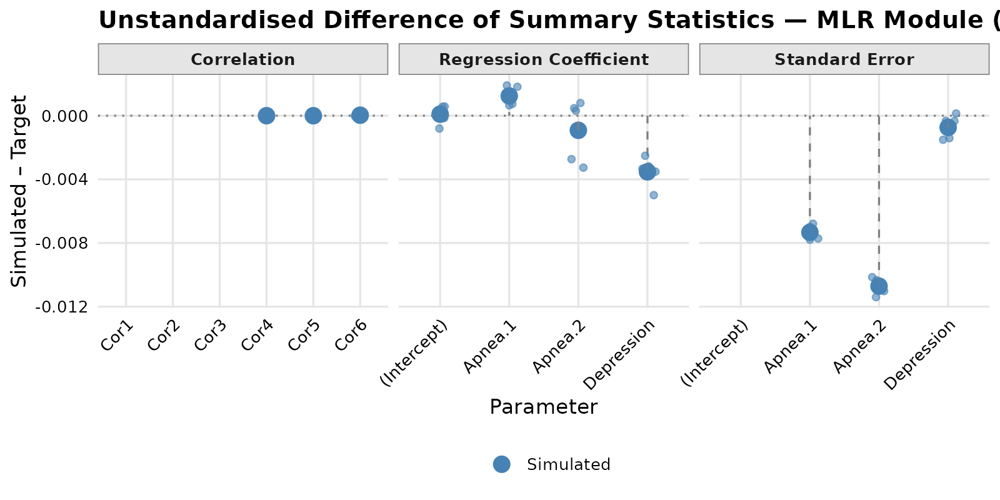
The single best run is accessible via $best and supports
the same S3 methods as a stand-alone result:
result.parallel$best
#> stats2data MLR result
#> N: 60
#> Equation: Fatigue ~ Apnea.1 + Apnea.2 + Depression
#> Best error: 0.00050209
get_rmse(result.parallel$best)
#> $rmse_cor
#> [1] 4.31112e-06
#>
#> $rmse_reg
#> [1] 0.001664871
#>
#> $rmse_se
#> [1] 0.007363473References
- Bardwell, W. A., Moore, P., Ancoli-Israel, S., & Dimsdale, J. E. (2003). Fatigue in obstructive sleep apnea: driven by depressive symptoms instead of apnea severity?. The American journal of psychiatry, 160(2), 350–355. https://doi.org/10.1176/appi.ajp.160.2.350
- Bardwell, W. A., Ancoli-Israel, S., & Dimsdale, J. E. (2007). Comparison of the effects of depressive symptoms and apnea severity on fatigue in patients with obstructive sleep apnea: a replication study. Journal of affective disorders, 97(1-3), 181–186. https://doi.org/10.1016/j.jad.2006.06.013
- Brown, N. J. L., & Heathers, J. A. J. (2017). The GRIM Test: A Simple Technique Detects Numerous Anomalies in the Reporting of Results in Psychology. Social Psychological and Personality Science, 8(4), 363–369. https://doi.org/10.1177/1948550616673876
- Open Science Collaboration. (2015). Estimating the reproducibility of psychological science. Science, 349(6251), aac4716. https://doi.org/10.1126/science.aac4716
- Reynolds, M., & Besner, D. (2008). Contextual effects on reading aloud: Evidence for pathway control. Journal of Experimental Psychology: Learning, Memory, and Cognition, 34(1), 50–64. https://doi.org/10.1037/0278-7393.34.1.50